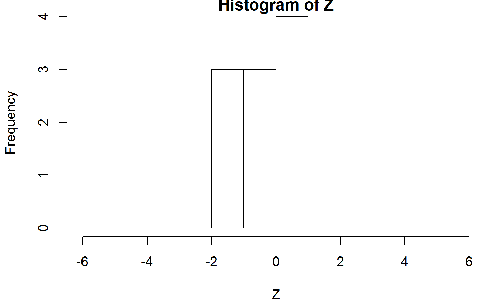
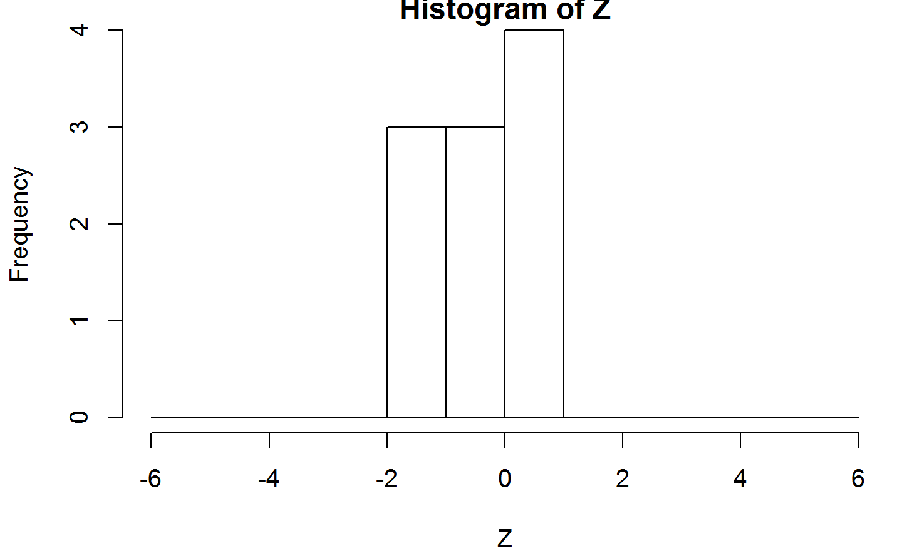
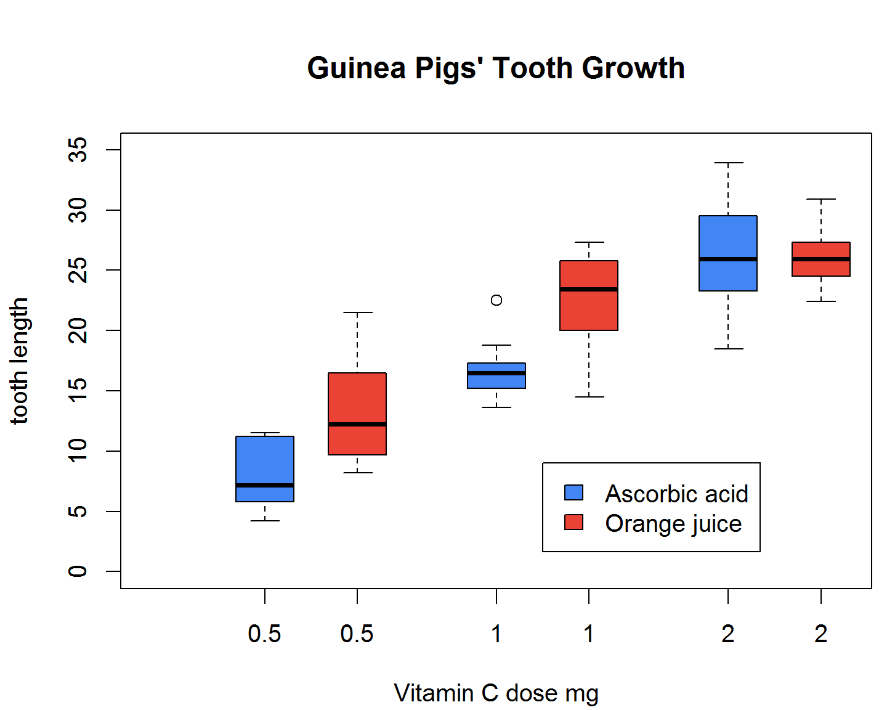

第 7 章 数据操作手
参考 Data Manipulation With R (Spector 2008) 重新捋一遍本章
什么是 Base R? Base R 指的是 R 语言/软件的核心组件，由 R Core Team 维护
Pkgs <- sapply(list.files(R.home("library")), function(x)
packageDescription(pkg = x, fields = "Priority"))
names(Pkgs[Pkgs == "base" & !is.na(Pkgs)])
#> [1] "base" "compiler" "datasets" "graphics" "grDevices" "grid"
#> [7] "methods" "parallel" "splines" "stats" "stats4" "tcltk"
#> [13] "tools" "utils"names(Pkgs[Pkgs == "recommended" & !is.na(Pkgs)])
#> [1] "boot" "class" "cluster" "codetools" "foreign"
#> [6] "KernSmooth" "lattice" "MASS" "Matrix" "mgcv"
#> [11] "nlme" "nnet" "rpart" "spatial" "survival"数据变形，分组统计聚合等，用以作为模型的输入，绘图的对象，操作的数据对象是数据框(data.frame)类型的，而且如果没有特别说明，文中出现的数据集都是 Base R 内置的，第三方 R 包或者来源于网上的数据集都会加以说明。
7.1 查看数据
查看属性
str(iris)
#> 'data.frame': 150 obs. of 5 variables:
#> $ Sepal.Length: num 5.1 4.9 4.7 4.6 5 5.4 4.6 5 4.4 4.9 ...
#> $ Sepal.Width : num 3.5 3 3.2 3.1 3.6 3.9 3.4 3.4 2.9 3.1 ...
#> $ Petal.Length: num 1.4 1.4 1.3 1.5 1.4 1.7 1.4 1.5 1.4 1.5 ...
#> $ Petal.Width : num 0.2 0.2 0.2 0.2 0.2 0.4 0.3 0.2 0.2 0.1 ...
#> $ Species : Factor w/ 3 levels "setosa","versicolor",..: 1 1 1 1 1 1 1 1..查看部分数据集
head(iris, 5)
#> Sepal.Length Sepal.Width Petal.Length Petal.Width Species
#> 1 5.1 3.5 1.4 0.2 setosa
#> 2 4.9 3.0 1.4 0.2 setosa
#> 3 4.7 3.2 1.3 0.2 setosa
#> 4 4.6 3.1 1.5 0.2 setosa
#> 5 5.0 3.6 1.4 0.2 setosa
tail(iris, 5)
#> Sepal.Length Sepal.Width Petal.Length Petal.Width Species
#> 146 6.7 3.0 5.2 2.3 virginica
#> 147 6.3 2.5 5.0 1.9 virginica
#> 148 6.5 3.0 5.2 2.0 virginica
#> 149 6.2 3.4 5.4 2.3 virginica
#> 150 5.9 3.0 5.1 1.8 virginica查看文件前（后）5行
head -n 5 clientip.csv
tail -n 5 clientip.csv对象的类型，存储方式
class(iris)
#> [1] "data.frame"
mode(iris)
#> [1] "list"
typeof(iris)
#> [1] "list"查看对象在R环境中所占空间的大小
object.size(iris)
#> 7256 bytes
object.size(letters)
#> 1712 bytes
object.size(ls)
#> 89904 bytes
format(object.size(library), units = "auto")
#> [1] "1.8 Mb"7.2 数据变形
重复测量数据的变形 Reshape Grouped Data，数据框宽格式 wide 变长格式 long
reshape 还支持正则表达式
str(Indometh)
#> Classes 'nfnGroupedData', 'nfGroupedData', 'groupedData' and 'data.frame': 66 obs. of 3 variables:
#> $ Subject: Ord.factor w/ 6 levels "1"<"4"<"2"<"5"<..: 1 1 1 1 1 1 1 1 1 1 ...
#> $ time : num 0.25 0.5 0.75 1 1.25 2 3 4 5 6 ...
#> $ conc : num 1.5 0.94 0.78 0.48 0.37 0.19 0.12 0.11 0.08 0.07 ...
#> - attr(*, "formula")=Class 'formula' language conc ~ time | Subject
#> .. ..- attr(*, ".Environment")=<environment: R_EmptyEnv>
#> - attr(*, "labels")=List of 2
#> ..$ x: chr "Time since drug administration"
#> ..$ y: chr "Indomethacin concentration"
#> - attr(*, "units")=List of 2
#> ..$ x: chr "(hr)"
#> ..$ y: chr "(mcg/ml)"
summary(Indometh)
#> Subject time conc
#> 1:11 Min. :0.25 Min. :0.050
#> 4:11 1st Qu.:0.75 1st Qu.:0.110
#> 2:11 Median :2.00 Median :0.340
#> 5:11 Mean :2.89 Mean :0.592
#> 6:11 3rd Qu.:5.00 3rd Qu.:0.832
#> 3:11 Max. :8.00 Max. :2.720wide <- reshape(Indometh,
v.names = "conc", idvar = "Subject",
timevar = "time", direction = "wide"
)
wide[, 1:6]
#> Subject conc.0.25 conc.0.5 conc.0.75 conc.1 conc.1.25
#> 1 1 1.50 0.94 0.78 0.48 0.37
#> 12 2 2.03 1.63 0.71 0.70 0.64
#> 23 3 2.72 1.49 1.16 0.80 0.80
#> 34 4 1.85 1.39 1.02 0.89 0.59
#> 45 5 2.05 1.04 0.81 0.39 0.30
#> 56 6 2.31 1.44 1.03 0.84 0.64长 long 变 wide 宽格式
data(gambia, package = "geoR")
# Building a "village-level" data frame
ind <- paste("x", gambia[, 1], "y", gambia[, 2], sep = "")
village <- gambia[!duplicated(ind), c(1:2, 7:8)]
village$prev <- as.vector(tapply(gambia$pos, ind, mean))
head(village)7.3 数据转换
transform 对数据框中的某些列做计算，取对数，将计算的结果单存一列加到数据框中
transform(iris, scale.sl = (max(Sepal.Length) - Sepal.Length) / (max(Sepal.Length) - min(Sepal.Length)))
#> Sepal.Length Sepal.Width Petal.Length Petal.Width Species scale.sl
#> 1 5.1 3.5 1.4 0.2 setosa 0.7778
#> 2 4.9 3.0 1.4 0.2 setosa 0.8333
#> 3 4.7 3.2 1.3 0.2 setosa 0.8889
#> 4 4.6 3.1 1.5 0.2 setosa 0.9167
#> 5 5.0 3.6 1.4 0.2 setosa 0.8056
#> 6 5.4 3.9 1.7 0.4 setosa 0.6944
#> 7 4.6 3.4 1.4 0.3 setosa 0.9167
#> 8 5.0 3.4 1.5 0.2 setosa 0.8056
#> 9 4.4 2.9 1.4 0.2 setosa 0.9722
#> 10 4.9 3.1 1.5 0.1 setosa 0.8333
#> 11 5.4 3.7 1.5 0.2 setosa 0.6944
#> 12 4.8 3.4 1.6 0.2 setosa 0.8611
#> 13 4.8 3.0 1.4 0.1 setosa 0.8611
#> 14 4.3 3.0 1.1 0.1 setosa 1.0000
#> 15 5.8 4.0 1.2 0.2 setosa 0.5833
#> 16 5.7 4.4 1.5 0.4 setosa 0.6111
#> 17 5.4 3.9 1.3 0.4 setosa 0.6944
#> 18 5.1 3.5 1.4 0.3 setosa 0.7778
#> 19 5.7 3.8 1.7 0.3 setosa 0.6111
#> 20 5.1 3.8 1.5 0.3 setosa 0.7778
#> 21 5.4 3.4 1.7 0.2 setosa 0.6944
#> 22 5.1 3.7 1.5 0.4 setosa 0.7778
#> 23 4.6 3.6 1.0 0.2 setosa 0.9167
#> 24 5.1 3.3 1.7 0.5 setosa 0.7778
#> 25 4.8 3.4 1.9 0.2 setosa 0.8611
#> 26 5.0 3.0 1.6 0.2 setosa 0.8056
#> 27 5.0 3.4 1.6 0.4 setosa 0.8056
#> 28 5.2 3.5 1.5 0.2 setosa 0.7500
#> 29 5.2 3.4 1.4 0.2 setosa 0.7500
#> 30 4.7 3.2 1.6 0.2 setosa 0.8889
#> 31 4.8 3.1 1.6 0.2 setosa 0.8611
#> 32 5.4 3.4 1.5 0.4 setosa 0.6944
#> 33 5.2 4.1 1.5 0.1 setosa 0.7500
#> 34 5.5 4.2 1.4 0.2 setosa 0.6667
#> 35 4.9 3.1 1.5 0.2 setosa 0.8333
#> 36 5.0 3.2 1.2 0.2 setosa 0.8056
#> 37 5.5 3.5 1.3 0.2 setosa 0.6667
#> 38 4.9 3.6 1.4 0.1 setosa 0.8333
#> 39 4.4 3.0 1.3 0.2 setosa 0.9722
#> 40 5.1 3.4 1.5 0.2 setosa 0.7778
#> 41 5.0 3.5 1.3 0.3 setosa 0.8056
#> 42 4.5 2.3 1.3 0.3 setosa 0.9444
#> 43 4.4 3.2 1.3 0.2 setosa 0.9722
#> 44 5.0 3.5 1.6 0.6 setosa 0.8056
#> 45 5.1 3.8 1.9 0.4 setosa 0.7778
#> 46 4.8 3.0 1.4 0.3 setosa 0.8611
#> 47 5.1 3.8 1.6 0.2 setosa 0.7778
#> 48 4.6 3.2 1.4 0.2 setosa 0.9167
#> 49 5.3 3.7 1.5 0.2 setosa 0.7222
#> 50 5.0 3.3 1.4 0.2 setosa 0.8056
#> 51 7.0 3.2 4.7 1.4 versicolor 0.2500
#> 52 6.4 3.2 4.5 1.5 versicolor 0.4167
#> 53 6.9 3.1 4.9 1.5 versicolor 0.2778
#> 54 5.5 2.3 4.0 1.3 versicolor 0.6667
#> 55 6.5 2.8 4.6 1.5 versicolor 0.3889
#> 56 5.7 2.8 4.5 1.3 versicolor 0.6111
#> 57 6.3 3.3 4.7 1.6 versicolor 0.4444
#> 58 4.9 2.4 3.3 1.0 versicolor 0.8333
#> 59 6.6 2.9 4.6 1.3 versicolor 0.3611
#> 60 5.2 2.7 3.9 1.4 versicolor 0.7500
#> 61 5.0 2.0 3.5 1.0 versicolor 0.8056
#> 62 5.9 3.0 4.2 1.5 versicolor 0.5556
#> 63 6.0 2.2 4.0 1.0 versicolor 0.5278
#> 64 6.1 2.9 4.7 1.4 versicolor 0.5000
#> 65 5.6 2.9 3.6 1.3 versicolor 0.6389
#> 66 6.7 3.1 4.4 1.4 versicolor 0.3333
#> 67 5.6 3.0 4.5 1.5 versicolor 0.6389
#> 68 5.8 2.7 4.1 1.0 versicolor 0.5833
#> 69 6.2 2.2 4.5 1.5 versicolor 0.4722
#> 70 5.6 2.5 3.9 1.1 versicolor 0.6389
#> 71 5.9 3.2 4.8 1.8 versicolor 0.5556
#> 72 6.1 2.8 4.0 1.3 versicolor 0.5000
#> 73 6.3 2.5 4.9 1.5 versicolor 0.4444
#> 74 6.1 2.8 4.7 1.2 versicolor 0.5000
#> 75 6.4 2.9 4.3 1.3 versicolor 0.4167
#> 76 6.6 3.0 4.4 1.4 versicolor 0.3611
#> 77 6.8 2.8 4.8 1.4 versicolor 0.3056
#> 78 6.7 3.0 5.0 1.7 versicolor 0.3333
#> 79 6.0 2.9 4.5 1.5 versicolor 0.5278
#> 80 5.7 2.6 3.5 1.0 versicolor 0.6111
#> 81 5.5 2.4 3.8 1.1 versicolor 0.6667
#> 82 5.5 2.4 3.7 1.0 versicolor 0.6667
#> 83 5.8 2.7 3.9 1.2 versicolor 0.5833
#> 84 6.0 2.7 5.1 1.6 versicolor 0.5278
#> 85 5.4 3.0 4.5 1.5 versicolor 0.6944
#> 86 6.0 3.4 4.5 1.6 versicolor 0.5278
#> 87 6.7 3.1 4.7 1.5 versicolor 0.3333
#> 88 6.3 2.3 4.4 1.3 versicolor 0.4444
#> 89 5.6 3.0 4.1 1.3 versicolor 0.6389
#> 90 5.5 2.5 4.0 1.3 versicolor 0.6667
#> 91 5.5 2.6 4.4 1.2 versicolor 0.6667
#> 92 6.1 3.0 4.6 1.4 versicolor 0.5000
#> 93 5.8 2.6 4.0 1.2 versicolor 0.5833
#> 94 5.0 2.3 3.3 1.0 versicolor 0.8056
#> 95 5.6 2.7 4.2 1.3 versicolor 0.6389
#> 96 5.7 3.0 4.2 1.2 versicolor 0.6111
#> 97 5.7 2.9 4.2 1.3 versicolor 0.6111
#> 98 6.2 2.9 4.3 1.3 versicolor 0.4722
#> 99 5.1 2.5 3.0 1.1 versicolor 0.7778
#> 100 5.7 2.8 4.1 1.3 versicolor 0.6111
#> 101 6.3 3.3 6.0 2.5 virginica 0.4444
#> 102 5.8 2.7 5.1 1.9 virginica 0.5833
#> 103 7.1 3.0 5.9 2.1 virginica 0.2222
#> 104 6.3 2.9 5.6 1.8 virginica 0.4444
#> 105 6.5 3.0 5.8 2.2 virginica 0.3889
#> 106 7.6 3.0 6.6 2.1 virginica 0.0833
#> 107 4.9 2.5 4.5 1.7 virginica 0.8333
#> 108 7.3 2.9 6.3 1.8 virginica 0.1667
#> 109 6.7 2.5 5.8 1.8 virginica 0.3333
#> 110 7.2 3.6 6.1 2.5 virginica 0.1944
#> 111 6.5 3.2 5.1 2.0 virginica 0.3889
#> 112 6.4 2.7 5.3 1.9 virginica 0.4167
#> 113 6.8 3.0 5.5 2.1 virginica 0.3056
#> 114 5.7 2.5 5.0 2.0 virginica 0.6111
#> 115 5.8 2.8 5.1 2.4 virginica 0.5833
#> 116 6.4 3.2 5.3 2.3 virginica 0.4167
#> 117 6.5 3.0 5.5 1.8 virginica 0.3889
#> 118 7.7 3.8 6.7 2.2 virginica 0.0556
#> 119 7.7 2.6 6.9 2.3 virginica 0.0556
#> 120 6.0 2.2 5.0 1.5 virginica 0.5278
#> 121 6.9 3.2 5.7 2.3 virginica 0.2778
#> 122 5.6 2.8 4.9 2.0 virginica 0.6389
#> 123 7.7 2.8 6.7 2.0 virginica 0.0556
#> 124 6.3 2.7 4.9 1.8 virginica 0.4444
#> 125 6.7 3.3 5.7 2.1 virginica 0.3333
#> 126 7.2 3.2 6.0 1.8 virginica 0.1944
#> 127 6.2 2.8 4.8 1.8 virginica 0.4722
#> 128 6.1 3.0 4.9 1.8 virginica 0.5000
#> 129 6.4 2.8 5.6 2.1 virginica 0.4167
#> 130 7.2 3.0 5.8 1.6 virginica 0.1944
#> 131 7.4 2.8 6.1 1.9 virginica 0.1389
#> 132 7.9 3.8 6.4 2.0 virginica 0.0000
#> 133 6.4 2.8 5.6 2.2 virginica 0.4167
#> 134 6.3 2.8 5.1 1.5 virginica 0.4444
#> 135 6.1 2.6 5.6 1.4 virginica 0.5000
#> 136 7.7 3.0 6.1 2.3 virginica 0.0556
#> 137 6.3 3.4 5.6 2.4 virginica 0.4444
#> 138 6.4 3.1 5.5 1.8 virginica 0.4167
#> 139 6.0 3.0 4.8 1.8 virginica 0.5278
#> 140 6.9 3.1 5.4 2.1 virginica 0.2778
#> 141 6.7 3.1 5.6 2.4 virginica 0.3333
#> 142 6.9 3.1 5.1 2.3 virginica 0.2778
#> 143 5.8 2.7 5.1 1.9 virginica 0.5833
#> 144 6.8 3.2 5.9 2.3 virginica 0.3056
#> 145 6.7 3.3 5.7 2.5 virginica 0.3333
#> 146 6.7 3.0 5.2 2.3 virginica 0.3333
#> 147 6.3 2.5 5.0 1.9 virginica 0.4444
#> 148 6.5 3.0 5.2 2.0 virginica 0.3889
#> 149 6.2 3.4 5.4 2.3 virginica 0.4722
#> 150 5.9 3.0 5.1 1.8 virginica 0.5556验证一下 scale.sl 变量的第一个值
(max(iris$Sepal.Length) - 5.1) / (max(iris$Sepal.Length) - min(iris$Sepal.Length))
#> [1] 0.7787.4 提取子集
subset(x, subset, select, drop = FALSE, ...)参数 subset代表行操作，select 代表列操作，函数 subset 从数据框中提取部分数据
subset(iris, Species == "virginica")
#> Sepal.Length Sepal.Width Petal.Length Petal.Width Species
#> 101 6.3 3.3 6.0 2.5 virginica
#> 102 5.8 2.7 5.1 1.9 virginica
#> 103 7.1 3.0 5.9 2.1 virginica
#> 104 6.3 2.9 5.6 1.8 virginica
#> 105 6.5 3.0 5.8 2.2 virginica
#> 106 7.6 3.0 6.6 2.1 virginica
#> 107 4.9 2.5 4.5 1.7 virginica
#> 108 7.3 2.9 6.3 1.8 virginica
#> 109 6.7 2.5 5.8 1.8 virginica
#> 110 7.2 3.6 6.1 2.5 virginica
#> 111 6.5 3.2 5.1 2.0 virginica
#> 112 6.4 2.7 5.3 1.9 virginica
#> 113 6.8 3.0 5.5 2.1 virginica
#> 114 5.7 2.5 5.0 2.0 virginica
#> 115 5.8 2.8 5.1 2.4 virginica
#> 116 6.4 3.2 5.3 2.3 virginica
#> 117 6.5 3.0 5.5 1.8 virginica
#> 118 7.7 3.8 6.7 2.2 virginica
#> 119 7.7 2.6 6.9 2.3 virginica
#> 120 6.0 2.2 5.0 1.5 virginica
#> 121 6.9 3.2 5.7 2.3 virginica
#> 122 5.6 2.8 4.9 2.0 virginica
#> 123 7.7 2.8 6.7 2.0 virginica
#> 124 6.3 2.7 4.9 1.8 virginica
#> 125 6.7 3.3 5.7 2.1 virginica
#> 126 7.2 3.2 6.0 1.8 virginica
#> 127 6.2 2.8 4.8 1.8 virginica
#> 128 6.1 3.0 4.9 1.8 virginica
#> 129 6.4 2.8 5.6 2.1 virginica
#> 130 7.2 3.0 5.8 1.6 virginica
#> 131 7.4 2.8 6.1 1.9 virginica
#> 132 7.9 3.8 6.4 2.0 virginica
#> 133 6.4 2.8 5.6 2.2 virginica
#> 134 6.3 2.8 5.1 1.5 virginica
#> 135 6.1 2.6 5.6 1.4 virginica
#> 136 7.7 3.0 6.1 2.3 virginica
#> 137 6.3 3.4 5.6 2.4 virginica
#> 138 6.4 3.1 5.5 1.8 virginica
#> 139 6.0 3.0 4.8 1.8 virginica
#> 140 6.9 3.1 5.4 2.1 virginica
#> 141 6.7 3.1 5.6 2.4 virginica
#> 142 6.9 3.1 5.1 2.3 virginica
#> 143 5.8 2.7 5.1 1.9 virginica
#> 144 6.8 3.2 5.9 2.3 virginica
#> 145 6.7 3.3 5.7 2.5 virginica
#> 146 6.7 3.0 5.2 2.3 virginica
#> 147 6.3 2.5 5.0 1.9 virginica
#> 148 6.5 3.0 5.2 2.0 virginica
#> 149 6.2 3.4 5.4 2.3 virginica
#> 150 5.9 3.0 5.1 1.8 virginica
# summary(iris$Sepal.Length) mean(iris$Sepal.Length)
# 且的逻辑
# subset(iris, Species == "virginica" & Sepal.Length > 5.84333)
subset(iris, Species == "virginica" &
Sepal.Length > mean(Sepal.Length))
#> Sepal.Length Sepal.Width Petal.Length Petal.Width Species
#> 101 6.3 3.3 6.0 2.5 virginica
#> 103 7.1 3.0 5.9 2.1 virginica
#> 104 6.3 2.9 5.6 1.8 virginica
#> 105 6.5 3.0 5.8 2.2 virginica
#> 106 7.6 3.0 6.6 2.1 virginica
#> 108 7.3 2.9 6.3 1.8 virginica
#> 109 6.7 2.5 5.8 1.8 virginica
#> 110 7.2 3.6 6.1 2.5 virginica
#> 111 6.5 3.2 5.1 2.0 virginica
#> 112 6.4 2.7 5.3 1.9 virginica
#> 113 6.8 3.0 5.5 2.1 virginica
#> 116 6.4 3.2 5.3 2.3 virginica
#> 117 6.5 3.0 5.5 1.8 virginica
#> 118 7.7 3.8 6.7 2.2 virginica
#> 119 7.7 2.6 6.9 2.3 virginica
#> 120 6.0 2.2 5.0 1.5 virginica
#> 121 6.9 3.2 5.7 2.3 virginica
#> 123 7.7 2.8 6.7 2.0 virginica
#> 124 6.3 2.7 4.9 1.8 virginica
#> 125 6.7 3.3 5.7 2.1 virginica
#> 126 7.2 3.2 6.0 1.8 virginica
#> 127 6.2 2.8 4.8 1.8 virginica
#> 128 6.1 3.0 4.9 1.8 virginica
#> 129 6.4 2.8 5.6 2.1 virginica
#> 130 7.2 3.0 5.8 1.6 virginica
#> 131 7.4 2.8 6.1 1.9 virginica
#> 132 7.9 3.8 6.4 2.0 virginica
#> 133 6.4 2.8 5.6 2.2 virginica
#> 134 6.3 2.8 5.1 1.5 virginica
#> 135 6.1 2.6 5.6 1.4 virginica
#> 136 7.7 3.0 6.1 2.3 virginica
#> 137 6.3 3.4 5.6 2.4 virginica
#> 138 6.4 3.1 5.5 1.8 virginica
#> 139 6.0 3.0 4.8 1.8 virginica
#> 140 6.9 3.1 5.4 2.1 virginica
#> 141 6.7 3.1 5.6 2.4 virginica
#> 142 6.9 3.1 5.1 2.3 virginica
#> 144 6.8 3.2 5.9 2.3 virginica
#> 145 6.7 3.3 5.7 2.5 virginica
#> 146 6.7 3.0 5.2 2.3 virginica
#> 147 6.3 2.5 5.0 1.9 virginica
#> 148 6.5 3.0 5.2 2.0 virginica
#> 149 6.2 3.4 5.4 2.3 virginica
#> 150 5.9 3.0 5.1 1.8 virginica
# 在行的子集范围内
subset(iris, Species %in% c("virginica", "versicolor") &
Sepal.Length > mean(Sepal.Length))
#> Sepal.Length Sepal.Width Petal.Length Petal.Width Species
#> 51 7.0 3.2 4.7 1.4 versicolor
#> 52 6.4 3.2 4.5 1.5 versicolor
#> 53 6.9 3.1 4.9 1.5 versicolor
#> 55 6.5 2.8 4.6 1.5 versicolor
#> 57 6.3 3.3 4.7 1.6 versicolor
#> 59 6.6 2.9 4.6 1.3 versicolor
#> 62 5.9 3.0 4.2 1.5 versicolor
#> 63 6.0 2.2 4.0 1.0 versicolor
#> 64 6.1 2.9 4.7 1.4 versicolor
#> 66 6.7 3.1 4.4 1.4 versicolor
#> 69 6.2 2.2 4.5 1.5 versicolor
#> 71 5.9 3.2 4.8 1.8 versicolor
#> 72 6.1 2.8 4.0 1.3 versicolor
#> 73 6.3 2.5 4.9 1.5 versicolor
#> 74 6.1 2.8 4.7 1.2 versicolor
#> 75 6.4 2.9 4.3 1.3 versicolor
#> 76 6.6 3.0 4.4 1.4 versicolor
#> 77 6.8 2.8 4.8 1.4 versicolor
#> 78 6.7 3.0 5.0 1.7 versicolor
#> 79 6.0 2.9 4.5 1.5 versicolor
#> 84 6.0 2.7 5.1 1.6 versicolor
#> 86 6.0 3.4 4.5 1.6 versicolor
#> 87 6.7 3.1 4.7 1.5 versicolor
#> 88 6.3 2.3 4.4 1.3 versicolor
#> 92 6.1 3.0 4.6 1.4 versicolor
#> 98 6.2 2.9 4.3 1.3 versicolor
#> 101 6.3 3.3 6.0 2.5 virginica
#> 103 7.1 3.0 5.9 2.1 virginica
#> 104 6.3 2.9 5.6 1.8 virginica
#> 105 6.5 3.0 5.8 2.2 virginica
#> 106 7.6 3.0 6.6 2.1 virginica
#> 108 7.3 2.9 6.3 1.8 virginica
#> 109 6.7 2.5 5.8 1.8 virginica
#> 110 7.2 3.6 6.1 2.5 virginica
#> 111 6.5 3.2 5.1 2.0 virginica
#> 112 6.4 2.7 5.3 1.9 virginica
#> 113 6.8 3.0 5.5 2.1 virginica
#> 116 6.4 3.2 5.3 2.3 virginica
#> 117 6.5 3.0 5.5 1.8 virginica
#> 118 7.7 3.8 6.7 2.2 virginica
#> 119 7.7 2.6 6.9 2.3 virginica
#> 120 6.0 2.2 5.0 1.5 virginica
#> 121 6.9 3.2 5.7 2.3 virginica
#> 123 7.7 2.8 6.7 2.0 virginica
#> 124 6.3 2.7 4.9 1.8 virginica
#> 125 6.7 3.3 5.7 2.1 virginica
#> 126 7.2 3.2 6.0 1.8 virginica
#> 127 6.2 2.8 4.8 1.8 virginica
#> 128 6.1 3.0 4.9 1.8 virginica
#> 129 6.4 2.8 5.6 2.1 virginica
#> 130 7.2 3.0 5.8 1.6 virginica
#> 131 7.4 2.8 6.1 1.9 virginica
#> 132 7.9 3.8 6.4 2.0 virginica
#> 133 6.4 2.8 5.6 2.2 virginica
#> 134 6.3 2.8 5.1 1.5 virginica
#> 135 6.1 2.6 5.6 1.4 virginica
#> 136 7.7 3.0 6.1 2.3 virginica
#> 137 6.3 3.4 5.6 2.4 virginica
#> 138 6.4 3.1 5.5 1.8 virginica
#> 139 6.0 3.0 4.8 1.8 virginica
#> 140 6.9 3.1 5.4 2.1 virginica
#> 141 6.7 3.1 5.6 2.4 virginica
#> 142 6.9 3.1 5.1 2.3 virginica
#> 144 6.8 3.2 5.9 2.3 virginica
#> 145 6.7 3.3 5.7 2.5 virginica
#> 146 6.7 3.0 5.2 2.3 virginica
#> 147 6.3 2.5 5.0 1.9 virginica
#> 148 6.5 3.0 5.2 2.0 virginica
#> 149 6.2 3.4 5.4 2.3 virginica
#> 150 5.9 3.0 5.1 1.8 virginica
# 在列的子集内 先选中列
subset(iris, Sepal.Length > mean(Sepal.Length),
select = c("Sepal.Length", "Species")
)
#> Sepal.Length Species
#> 51 7.0 versicolor
#> 52 6.4 versicolor
#> 53 6.9 versicolor
#> 55 6.5 versicolor
#> 57 6.3 versicolor
#> 59 6.6 versicolor
#> 62 5.9 versicolor
#> 63 6.0 versicolor
#> 64 6.1 versicolor
#> 66 6.7 versicolor
#> 69 6.2 versicolor
#> 71 5.9 versicolor
#> 72 6.1 versicolor
#> 73 6.3 versicolor
#> 74 6.1 versicolor
#> 75 6.4 versicolor
#> 76 6.6 versicolor
#> 77 6.8 versicolor
#> 78 6.7 versicolor
#> 79 6.0 versicolor
#> 84 6.0 versicolor
#> 86 6.0 versicolor
#> 87 6.7 versicolor
#> 88 6.3 versicolor
#> 92 6.1 versicolor
#> 98 6.2 versicolor
#> 101 6.3 virginica
#> 103 7.1 virginica
#> 104 6.3 virginica
#> 105 6.5 virginica
#> 106 7.6 virginica
#> 108 7.3 virginica
#> 109 6.7 virginica
#> 110 7.2 virginica
#> 111 6.5 virginica
#> 112 6.4 virginica
#> 113 6.8 virginica
#> 116 6.4 virginica
#> 117 6.5 virginica
#> 118 7.7 virginica
#> 119 7.7 virginica
#> 120 6.0 virginica
#> 121 6.9 virginica
#> 123 7.7 virginica
#> 124 6.3 virginica
#> 125 6.7 virginica
#> 126 7.2 virginica
#> 127 6.2 virginica
#> 128 6.1 virginica
#> 129 6.4 virginica
#> 130 7.2 virginica
#> 131 7.4 virginica
#> 132 7.9 virginica
#> 133 6.4 virginica
#> 134 6.3 virginica
#> 135 6.1 virginica
#> 136 7.7 virginica
#> 137 6.3 virginica
#> 138 6.4 virginica
#> 139 6.0 virginica
#> 140 6.9 virginica
#> 141 6.7 virginica
#> 142 6.9 virginica
#> 144 6.8 virginica
#> 145 6.7 virginica
#> 146 6.7 virginica
#> 147 6.3 virginica
#> 148 6.5 virginica
#> 149 6.2 virginica
#> 150 5.9 virginica高级操作：加入正则表达式筛选
## sometimes requiring a logical 'subset' argument is a nuisance
nm <- rownames(state.x77)
start_with_M <- nm %in% grep("^M", nm, value = TRUE)
subset(state.x77, start_with_M, Illiteracy:Murder)
#> Illiteracy Life Exp Murder
#> Maine 0.7 70.4 2.7
#> Maryland 0.9 70.2 8.5
#> Massachusetts 1.1 71.8 3.3
#> Michigan 0.9 70.6 11.1
#> Minnesota 0.6 73.0 2.3
#> Mississippi 2.4 68.1 12.5
#> Missouri 0.8 70.7 9.3
#> Montana 0.6 70.6 5.0
# 简化
# subset(state.x77, subset = grepl("^M", rownames(state.x77)), select = Illiteracy:Murder)
# 继续简化
subset(state.x77, grepl("^M", rownames(state.x77)), Illiteracy:Murder)
#> Illiteracy Life Exp Murder
#> Maine 0.7 70.4 2.7
#> Maryland 0.9 70.2 8.5
#> Massachusetts 1.1 71.8 3.3
#> Michigan 0.9 70.6 11.1
#> Minnesota 0.6 73.0 2.3
#> Mississippi 2.4 68.1 12.5
#> Missouri 0.8 70.7 9.3
#> Montana 0.6 70.6 5.0使用索引 [
iris[iris$Species == "virginica", ]
#> Sepal.Length Sepal.Width Petal.Length Petal.Width Species
#> 101 6.3 3.3 6.0 2.5 virginica
#> 102 5.8 2.7 5.1 1.9 virginica
#> 103 7.1 3.0 5.9 2.1 virginica
#> 104 6.3 2.9 5.6 1.8 virginica
#> 105 6.5 3.0 5.8 2.2 virginica
#> 106 7.6 3.0 6.6 2.1 virginica
#> 107 4.9 2.5 4.5 1.7 virginica
#> 108 7.3 2.9 6.3 1.8 virginica
#> 109 6.7 2.5 5.8 1.8 virginica
#> 110 7.2 3.6 6.1 2.5 virginica
#> 111 6.5 3.2 5.1 2.0 virginica
#> 112 6.4 2.7 5.3 1.9 virginica
#> 113 6.8 3.0 5.5 2.1 virginica
#> 114 5.7 2.5 5.0 2.0 virginica
#> 115 5.8 2.8 5.1 2.4 virginica
#> 116 6.4 3.2 5.3 2.3 virginica
#> 117 6.5 3.0 5.5 1.8 virginica
#> 118 7.7 3.8 6.7 2.2 virginica
#> 119 7.7 2.6 6.9 2.3 virginica
#> 120 6.0 2.2 5.0 1.5 virginica
#> 121 6.9 3.2 5.7 2.3 virginica
#> 122 5.6 2.8 4.9 2.0 virginica
#> 123 7.7 2.8 6.7 2.0 virginica
#> 124 6.3 2.7 4.9 1.8 virginica
#> 125 6.7 3.3 5.7 2.1 virginica
#> 126 7.2 3.2 6.0 1.8 virginica
#> 127 6.2 2.8 4.8 1.8 virginica
#> 128 6.1 3.0 4.9 1.8 virginica
#> 129 6.4 2.8 5.6 2.1 virginica
#> 130 7.2 3.0 5.8 1.6 virginica
#> 131 7.4 2.8 6.1 1.9 virginica
#> 132 7.9 3.8 6.4 2.0 virginica
#> 133 6.4 2.8 5.6 2.2 virginica
#> 134 6.3 2.8 5.1 1.5 virginica
#> 135 6.1 2.6 5.6 1.4 virginica
#> 136 7.7 3.0 6.1 2.3 virginica
#> 137 6.3 3.4 5.6 2.4 virginica
#> 138 6.4 3.1 5.5 1.8 virginica
#> 139 6.0 3.0 4.8 1.8 virginica
#> 140 6.9 3.1 5.4 2.1 virginica
#> 141 6.7 3.1 5.6 2.4 virginica
#> 142 6.9 3.1 5.1 2.3 virginica
#> 143 5.8 2.7 5.1 1.9 virginica
#> 144 6.8 3.2 5.9 2.3 virginica
#> 145 6.7 3.3 5.7 2.5 virginica
#> 146 6.7 3.0 5.2 2.3 virginica
#> 147 6.3 2.5 5.0 1.9 virginica
#> 148 6.5 3.0 5.2 2.0 virginica
#> 149 6.2 3.4 5.4 2.3 virginica
#> 150 5.9 3.0 5.1 1.8 virginica
iris[iris$Species == "virginica" &
iris$Sepal.Length > mean(iris$Sepal.Length), ]
#> Sepal.Length Sepal.Width Petal.Length Petal.Width Species
#> 101 6.3 3.3 6.0 2.5 virginica
#> 103 7.1 3.0 5.9 2.1 virginica
#> 104 6.3 2.9 5.6 1.8 virginica
#> 105 6.5 3.0 5.8 2.2 virginica
#> 106 7.6 3.0 6.6 2.1 virginica
#> 108 7.3 2.9 6.3 1.8 virginica
#> 109 6.7 2.5 5.8 1.8 virginica
#> 110 7.2 3.6 6.1 2.5 virginica
#> 111 6.5 3.2 5.1 2.0 virginica
#> 112 6.4 2.7 5.3 1.9 virginica
#> 113 6.8 3.0 5.5 2.1 virginica
#> 116 6.4 3.2 5.3 2.3 virginica
#> 117 6.5 3.0 5.5 1.8 virginica
#> 118 7.7 3.8 6.7 2.2 virginica
#> 119 7.7 2.6 6.9 2.3 virginica
#> 120 6.0 2.2 5.0 1.5 virginica
#> 121 6.9 3.2 5.7 2.3 virginica
#> 123 7.7 2.8 6.7 2.0 virginica
#> 124 6.3 2.7 4.9 1.8 virginica
#> 125 6.7 3.3 5.7 2.1 virginica
#> 126 7.2 3.2 6.0 1.8 virginica
#> 127 6.2 2.8 4.8 1.8 virginica
#> 128 6.1 3.0 4.9 1.8 virginica
#> 129 6.4 2.8 5.6 2.1 virginica
#> 130 7.2 3.0 5.8 1.6 virginica
#> 131 7.4 2.8 6.1 1.9 virginica
#> 132 7.9 3.8 6.4 2.0 virginica
#> 133 6.4 2.8 5.6 2.2 virginica
#> 134 6.3 2.8 5.1 1.5 virginica
#> 135 6.1 2.6 5.6 1.4 virginica
#> 136 7.7 3.0 6.1 2.3 virginica
#> 137 6.3 3.4 5.6 2.4 virginica
#> 138 6.4 3.1 5.5 1.8 virginica
#> 139 6.0 3.0 4.8 1.8 virginica
#> 140 6.9 3.1 5.4 2.1 virginica
#> 141 6.7 3.1 5.6 2.4 virginica
#> 142 6.9 3.1 5.1 2.3 virginica
#> 144 6.8 3.2 5.9 2.3 virginica
#> 145 6.7 3.3 5.7 2.5 virginica
#> 146 6.7 3.0 5.2 2.3 virginica
#> 147 6.3 2.5 5.0 1.9 virginica
#> 148 6.5 3.0 5.2 2.0 virginica
#> 149 6.2 3.4 5.4 2.3 virginica
#> 150 5.9 3.0 5.1 1.8 virginica
iris[
iris$Species == "virginica" &
iris$Sepal.Length > mean(iris$Sepal.Length),
c("Sepal.Length", "Species")
]
#> Sepal.Length Species
#> 101 6.3 virginica
#> 103 7.1 virginica
#> 104 6.3 virginica
#> 105 6.5 virginica
#> 106 7.6 virginica
#> 108 7.3 virginica
#> 109 6.7 virginica
#> 110 7.2 virginica
#> 111 6.5 virginica
#> 112 6.4 virginica
#> 113 6.8 virginica
#> 116 6.4 virginica
#> 117 6.5 virginica
#> 118 7.7 virginica
#> 119 7.7 virginica
#> 120 6.0 virginica
#> 121 6.9 virginica
#> 123 7.7 virginica
#> 124 6.3 virginica
#> 125 6.7 virginica
#> 126 7.2 virginica
#> 127 6.2 virginica
#> 128 6.1 virginica
#> 129 6.4 virginica
#> 130 7.2 virginica
#> 131 7.4 virginica
#> 132 7.9 virginica
#> 133 6.4 virginica
#> 134 6.3 virginica
#> 135 6.1 virginica
#> 136 7.7 virginica
#> 137 6.3 virginica
#> 138 6.4 virginica
#> 139 6.0 virginica
#> 140 6.9 virginica
#> 141 6.7 virginica
#> 142 6.9 virginica
#> 144 6.8 virginica
#> 145 6.7 virginica
#> 146 6.7 virginica
#> 147 6.3 virginica
#> 148 6.5 virginica
#> 149 6.2 virginica
#> 150 5.9 virginica7.5 按列排序
在数据框内，根据(order)某一列或几列对行进行排序(sort)，根据鸢尾花(iris)的类别(Species)对萼片(sepal)的长度进行排序，其余的列随之变化
# 对萼片的长度排序
iris[order(iris$Species, iris$Sepal.Length), ]
#> Sepal.Length Sepal.Width Petal.Length Petal.Width Species
#> 14 4.3 3.0 1.1 0.1 setosa
#> 9 4.4 2.9 1.4 0.2 setosa
#> 39 4.4 3.0 1.3 0.2 setosa
#> 43 4.4 3.2 1.3 0.2 setosa
#> 42 4.5 2.3 1.3 0.3 setosa
#> 4 4.6 3.1 1.5 0.2 setosa
#> 7 4.6 3.4 1.4 0.3 setosa
#> 23 4.6 3.6 1.0 0.2 setosa
#> 48 4.6 3.2 1.4 0.2 setosa
....
# 对花瓣的长度排序
iris[order(iris$Species, iris$Petal.Length), ]
#> Sepal.Length Sepal.Width Petal.Length Petal.Width Species
#> 23 4.6 3.6 1.0 0.2 setosa
#> 14 4.3 3.0 1.1 0.1 setosa
#> 15 5.8 4.0 1.2 0.2 setosa
#> 36 5.0 3.2 1.2 0.2 setosa
#> 3 4.7 3.2 1.3 0.2 setosa
#> 17 5.4 3.9 1.3 0.4 setosa
#> 37 5.5 3.5 1.3 0.2 setosa
#> 39 4.4 3.0 1.3 0.2 setosa
#> 41 5.0 3.5 1.3 0.3 setosa
....
# 先对花瓣的宽度排序，再对花瓣的长度排序
iris[order(iris$Petal.Width, iris$Petal.Length), ]
#> Sepal.Length Sepal.Width Petal.Length Petal.Width Species
#> 14 4.3 3.0 1.1 0.1 setosa
#> 13 4.8 3.0 1.4 0.1 setosa
#> 38 4.9 3.6 1.4 0.1 setosa
#> 10 4.9 3.1 1.5 0.1 setosa
#> 33 5.2 4.1 1.5 0.1 setosa
#> 23 4.6 3.6 1.0 0.2 setosa
#> 15 5.8 4.0 1.2 0.2 setosa
#> 36 5.0 3.2 1.2 0.2 setosa
#> 3 4.7 3.2 1.3 0.2 setosa
....sort/ordered 排序， 默认是升序
dd <- data.frame(
b = factor(c("Hi", "Med", "Hi", "Low"),
levels = c("Low", "Med", "Hi"), ordered = TRUE
),
x = c("A", "D", "A", "C"), y = c(8, 3, 9, 9),
z = c(1, 1, 1, 2)
)
str(dd)
#> 'data.frame': 4 obs. of 4 variables:
#> $ b: Ord.factor w/ 3 levels "Low"<"Med"<"Hi": 3 2 3 1
#> $ x: chr "A" "D" "A" "C"
#> $ y: num 8 3 9 9
#> $ z: num 1 1 1 2
dd[order(-dd[,4], dd[,1]), ]
#> b x y z
#> 4 Low C 9 2
#> 2 Med D 3 1
#> 1 Hi A 8 1
#> 3 Hi A 9 1根据变量 z
dd[order(dd$z, dd$b), ]
#> b x y z
#> 2 Med D 3 1
#> 1 Hi A 8 1
#> 3 Hi A 9 1
#> 4 Low C 9 27.6 数据拆分
数据拆分通常是按找某一个分类变量分组，分完组就是计算，计算完就把结果按照原来的分组方式合并
## Notice that assignment form is not used since a variable is being added
g <- airquality$Month
l <- split(airquality, g) # 分组
l <- lapply(l, transform, Oz.Z = scale(Ozone)) # 计算：按月对 Ozone 标准化
aq2 <- unsplit(l, g) # 合并
head(aq2)
#> Ozone Solar.R Wind Temp Month Day Oz.Z
#> 1 41 190 7.4 67 5 1 0.782
#> 2 36 118 8.0 72 5 2 0.557
#> 3 12 149 12.6 74 5 3 -0.523
#> 4 18 313 11.5 62 5 4 -0.253
#> 5 NA NA 14.3 56 5 5 NA
#> 6 28 NA 14.9 66 5 6 0.197tapply 自带分组的功能，按月份 Month 对 Ozone 中心标准化，其返回一个列表
with(airquality, tapply(Ozone, Month, scale))
#> $`5`
#> [,1]
#> [1,] 0.7822
#> [2,] 0.5573
#> [3,] -0.5226
#> [4,] -0.2527
#> [5,] NA
#> [6,] 0.1973
#> [7,] -0.0277
#> [8,] -0.2077
....上面的过程等价于
do.call("rbind", lapply(split(airquality, airquality$Month), transform, Oz.Z = scale(Ozone)))
#> Ozone Solar.R Wind Temp Month Day Oz.Z
#> 5.1 41 190 7.4 67 5 1 0.78223
#> 5.2 36 118 8.0 72 5 2 0.55725
#> 5.3 12 149 12.6 74 5 3 -0.52264
#> 5.4 18 313 11.5 62 5 4 -0.25267
#> 5.5 NA NA 14.3 56 5 5 NA
#> 5.6 28 NA 14.9 66 5 6 0.19729
#> 5.7 23 299 8.6 65 5 7 -0.02769
#> 5.8 19 99 13.8 59 5 8 -0.20767
#> 5.9 8 19 20.1 61 5 9 -0.70262
....由于上面对 Ozone 正态标准化，所以标准化后的 Oz.z 再按月分组计算方差自然每个月都是 1，而均值都是 0。
with(aq2, tapply(Oz.Z, Month, sd, na.rm = TRUE))
#> 5 6 7 8 9
#> 1 1 1 1 1
with(aq2, tapply(Oz.Z, Month, mean, na.rm = TRUE))
#> 5 6 7 8 9
#> -4.24e-17 1.05e-16 5.84e-17 5.90e-17 2.57e-17循着这个思路，我们可以用 tapply 实现分组计算，上面函数
sd和mean完全可以用自定义的更加复杂的函数替代
cut 函数可以将连续型变量划分为分类变量
set.seed(2019)
Z <- stats::rnorm(10)
cut(Z, breaks = -6:6)
#> [1] (0,1] (-1,0] (-2,-1] (0,1] (-2,-1] (0,1] (-1,0] (0,1] (-2,-1]
#> [10] (-1,0]
#> 12 Levels: (-6,-5] (-5,-4] (-4,-3] (-3,-2] (-2,-1] (-1,0] (0,1] ... (5,6]
# labels = FALSE 返回每个数所落的区间位置
cut(Z, breaks = -6:6, labels = FALSE)
#> [1] 7 6 5 7 5 7 6 7 5 6我们还可以指定参数 dig.lab 设置分组的精度，ordered 将分组变量看作是有序的，breaks 传递单个数时，表示分组数，而不是断点
cut(Z, breaks = 3, dig.lab = 4, ordered = TRUE)
#> [1] (0.06396,0.9186] (-0.7881,0.06396] (-1.643,-0.7881] (0.06396,0.9186]
#> [5] (-1.643,-0.7881] (0.06396,0.9186] (-0.7881,0.06396] (0.06396,0.9186]
#> [9] (-1.643,-0.7881] (-0.7881,0.06396]
#> Levels: (-1.643,-0.7881] < (-0.7881,0.06396] < (0.06396,0.9186]此时，统计每组的频数，如图 7.1
# 条形图
plot(cut(Z, breaks = -6:6))
# 直方图
hist(Z, breaks = -6:6) 

图 7.1: 连续型变量分组统计
在指定分组数的情况下，我们还想获取分组的断点
labs <- levels(cut(Z, 3))
labs
#> [1] "(-1.64,-0.788]" "(-0.788,0.064]" "(0.064,0.919]"用正则表达式抽取断点
cbind(
lower = as.numeric(sub("\\((.+),.*", "\\1", labs)),
upper = as.numeric(sub("[^,]*,([^]]*)\\]", "\\1", labs))
)
#> lower upper
#> [1,] -1.640 -0.788
#> [2,] -0.788 0.064
#> [3,] 0.064 0.919更多相关函数可以参考 findInterval 和 embed
t(combn(8, 4, tabulate, nbins = 8))7.7 数据合并
merge 合并两个数据框
authors <- data.frame(
## I(*) : use character columns of names to get sensible sort order
surname = I(c("Tukey", "Venables", "Tierney", "Ripley", "McNeil")),
nationality = c("US", "Australia", "US", "UK", "Australia"),
deceased = c("yes", rep("no", 4))
)
authorN <- within(authors, {
name <- surname
rm(surname)
})
books <- data.frame(
name = I(c(
"Tukey", "Venables", "Tierney",
"Ripley", "Ripley", "McNeil", "R Core"
)),
title = c(
"Exploratory Data Analysis",
"Modern Applied Statistics ...",
"LISP-STAT",
"Spatial Statistics", "Stochastic Simulation",
"Interactive Data Analysis",
"An Introduction to R"
),
other.author = c(
NA, "Ripley", NA, NA, NA, NA,
"Venables & Smith"
)
)
authors
#> surname nationality deceased
#> 1 Tukey US yes
#> 2 Venables Australia no
#> 3 Tierney US no
#> 4 Ripley UK no
#> 5 McNeil Australia no
authorN
#> nationality deceased name
#> 1 US yes Tukey
#> 2 Australia no Venables
#> 3 US no Tierney
#> 4 UK no Ripley
#> 5 Australia no McNeil
books
#> name title other.author
#> 1 Tukey Exploratory Data Analysis <NA>
#> 2 Venables Modern Applied Statistics ... Ripley
#> 3 Tierney LISP-STAT <NA>
#> 4 Ripley Spatial Statistics <NA>
#> 5 Ripley Stochastic Simulation <NA>
#> 6 McNeil Interactive Data Analysis <NA>
#> 7 R Core An Introduction to R Venables & Smith默认找到同名的列，然后是同名的行合并，多余的没有匹配到的就丢掉
merge(authorN, books)
#> name nationality deceased title other.author
#> 1 McNeil Australia no Interactive Data Analysis <NA>
#> 2 Ripley UK no Spatial Statistics <NA>
#> 3 Ripley UK no Stochastic Simulation <NA>
#> 4 Tierney US no LISP-STAT <NA>
#> 5 Tukey US yes Exploratory Data Analysis <NA>
#> 6 Venables Australia no Modern Applied Statistics ... Ripley还可以指定合并的列，先按照 surname 合并，留下 surname
merge(authors, books, by.x = "surname", by.y = "name")
#> surname nationality deceased title other.author
#> 1 McNeil Australia no Interactive Data Analysis <NA>
#> 2 Ripley UK no Spatial Statistics <NA>
#> 3 Ripley UK no Stochastic Simulation <NA>
#> 4 Tierney US no LISP-STAT <NA>
#> 5 Tukey US yes Exploratory Data Analysis <NA>
#> 6 Venables Australia no Modern Applied Statistics ... Ripley留下的是 name
merge(books, authors, by.x = "name", by.y = "surname")
#> name title other.author nationality deceased
#> 1 McNeil Interactive Data Analysis <NA> Australia no
#> 2 Ripley Spatial Statistics <NA> UK no
#> 3 Ripley Stochastic Simulation <NA> UK no
#> 4 Tierney LISP-STAT <NA> US no
#> 5 Tukey Exploratory Data Analysis <NA> US yes
#> 6 Venables Modern Applied Statistics ... Ripley Australia no为了比较清楚地观察几种合并的区别，这里提供对应的动画展示 https://github.com/gadenbuie/tidyexplain
cbind rbind
left join right join
7.8 数据去重
单个数值型向量去重，此时和 unique 函数作用一样
(x <- c(9:20, 1:5, 3:7, 0:8))
#> [1] 9 10 11 12 13 14 15 16 17 18 19 20 1 2 3 4 5 3 4 5 6 7 0 1 2
#> [26] 3 4 5 6 7 8
## extract unique elements
x[!duplicated(x)]
#> [1] 9 10 11 12 13 14 15 16 17 18 19 20 1 2 3 4 5 6 7 0 8
unique(x)
#> [1] 9 10 11 12 13 14 15 16 17 18 19 20 1 2 3 4 5 6 7 0 8数据框类型数据中，去除重复的行，这个重复可以是多个变量对应的向量
set.seed(123)
df <- data.frame(
x = sample(0:1, 10, replace = T),
y = sample(0:1, 10, replace = T),
z = 1:10
)
df
#> x y z
#> 1 0 1 1
#> 2 0 1 2
#> 3 0 1 3
#> 4 1 0 4
#> 5 0 1 5
#> 6 1 0 6
#> 7 1 1 7
#> 8 1 0 8
#> 9 0 0 9
#> 10 0 0 10
df[!duplicated(df[, 1:2]), ]
#> x y z
#> 1 0 1 1
#> 4 1 0 4
#> 7 1 1 7
#> 9 0 0 97.9 数据聚合
主要是分组统计
apropos("apply")
#> [1] "apply" "dendrapply" "eapply" "kernapply" "lapply"
#> [6] "mapply" "rapply" "sapply" "tapply" "vapply"# 分组求和 colSums colMeans max
unique(iris$Species)
#> [1] setosa versicolor virginica
#> Levels: setosa versicolor virginica
# 分类求和
# colSums(iris[iris$Species == "setosa", -5])
# colSums(iris[iris$Species == "virginica", -5])
colSums(iris[iris$Species == "versicolor", -5])
#> Sepal.Length Sepal.Width Petal.Length Petal.Width
#> 296.8 138.5 213.0 66.3
# apply(iris[iris$Species == "setosa", -5], 2, sum)
# apply(iris[iris$Species == "setosa", -5], 2, mean)
# apply(iris[iris$Species == "setosa", -5], 2, min)
# apply(iris[iris$Species == "setosa", -5], 2, max)
apply(iris[iris$Species == "setosa", -5], 2, quantile)
#> Sepal.Length Sepal.Width Petal.Length Petal.Width
#> 0% 4.3 2.30 1.00 0.1
#> 25% 4.8 3.20 1.40 0.2
#> 50% 5.0 3.40 1.50 0.2
#> 75% 5.2 3.68 1.58 0.3
#> 100% 5.8 4.40 1.90 0.6aggregate: Compute Summary Statistics of Data Subsets
# 按分类变量 Species 分组求和
# aggregate(subset(iris, select = -Species), by = list(iris[, "Species"]), FUN = sum)
aggregate(iris[, -5], list(iris[, 5]), sum)
#> Group.1 Sepal.Length Sepal.Width Petal.Length Petal.Width
#> 1 setosa 250 171 73.1 12.3
#> 2 versicolor 297 138 213.0 66.3
#> 3 virginica 329 149 277.6 101.3
# 先确定位置，假设有很多分类变量
ind <- which("Species" == colnames(iris))
# 分组统计
aggregate(iris[, -ind], list(iris[, ind]), sum)
#> Group.1 Sepal.Length Sepal.Width Petal.Length Petal.Width
#> 1 setosa 250 171 73.1 12.3
#> 2 versicolor 297 138 213.0 66.3
#> 3 virginica 329 149 277.6 101.3按照 Species 划分的类别，分组计算，使用公式表示形式，右边一定是分类变量，否则会报错误或者警告，输出奇怪的结果，请读者尝试运行aggregate(Species ~ Sepal.Length, data = iris, mean)。公式法表示分组计算，~ 左手边可以做加 + 减 - 乘 * 除 / 取余 %% 等数学运算。下面以数据集 iris 为例，只对 Sepal.Length 按 Species 分组计算
aggregate(Sepal.Length ~ Species, data = iris, mean)
#> Species Sepal.Length
#> 1 setosa 5.01
#> 2 versicolor 5.94
#> 3 virginica 6.59与上述分组统计结果一样的命令，在大数据集上， 与 aggregate 相比，tapply 要快很多，by 是 tapply 的包裹，处理速度差不多。读者可以构造伪随机数据集验证。
# tapply(iris$Sepal.Length, list(iris$Species), mean)
with(iris, tapply(Sepal.Length, Species, mean))
#> setosa versicolor virginica
#> 5.01 5.94 6.59
by(iris$Sepal.Length, iris$Species, mean)
#> iris$Species: setosa
#> [1] 5.01
#> -----------------------------------------------------------
#> iris$Species: versicolor
#> [1] 5.94
#> -----------------------------------------------------------
#> iris$Species: virginica
#> [1] 6.59对所有变量按 Species 分组计算
aggregate(. ~ Species, data = iris, mean)
#> Species Sepal.Length Sepal.Width Petal.Length Petal.Width
#> 1 setosa 5.01 3.43 1.46 0.246
#> 2 versicolor 5.94 2.77 4.26 1.326
#> 3 virginica 6.59 2.97 5.55 2.026对变量 Sepal.Length 和 Sepal.Width 求和后，按 Species 分组计算
aggregate(Sepal.Length + Sepal.Width ~ Species, data = iris, mean)
#> Species Sepal.Length + Sepal.Width
#> 1 setosa 8.43
#> 2 versicolor 8.71
#> 3 virginica 9.56对多个分类变量做分组计算，在数据集 ChickWeight 中 Chick和Diet都是数字编码的分类变量，其中 Chick 是有序的因子变量，Diet 是无序的因子变量，而 Time 是数值型的变量，表示小鸡出生的天数。
# 查看数据
str(ChickWeight)
#> Classes 'nfnGroupedData', 'nfGroupedData', 'groupedData' and 'data.frame': 578 obs. of 4 variables:
#> $ weight: num 42 51 59 64 76 93 106 125 149 171 ...
#> $ Time : num 0 2 4 6 8 10 12 14 16 18 ...
#> $ Chick : Ord.factor w/ 50 levels "18"<"16"<"15"<..: 15 15 15 15 15 15 15 15..
#> $ Diet : Factor w/ 4 levels "1","2","3","4": 1 1 1 1 1 1 1 1 1 1 ...
#> - attr(*, "formula")=Class 'formula' language weight ~ Time | Chick
#> .. ..- attr(*, ".Environment")=<environment: R_EmptyEnv>
#> - attr(*, "outer")=Class 'formula' language ~Diet
#> .. ..- attr(*, ".Environment")=<environment: R_EmptyEnv>
#> - attr(*, "labels")=List of 2
#> ..$ x: chr "Time"
#> ..$ y: chr "Body weight"
#> - attr(*, "units")=List of 2
#> ..$ x: chr "(days)"
#> ..$ y: chr "(gm)"查看数据集ChickWeight的前几行
# head(ChickWeight)
ChickWeight
#> Grouped Data: weight ~ Time | Chick
#> weight Time Chick Diet
#> 1 42 0 1 1
#> 2 51 2 1 1
#> 3 59 4 1 1
#> 4 64 6 1 1
....对于数据集ChickWeight中的有序变量Chick，aggregate 会按照既定顺序返回分组计算的结果
aggregate(weight ~ Chick, data = ChickWeight, mean)
#> Chick weight
#> 1 18 37.0
#> 2 16 49.7
#> 3 15 60.1
#> 4 13 67.8
#> 5 9 81.2
....
aggregate(weight ~ Diet, data = ChickWeight, mean)
#> Diet weight
#> 1 1 103
#> 2 2 123
#> 3 3 143
#> 4 4 135分类变量没有用数字编码，以 CO2 数据集为例，该数据集描述草植对二氧化碳的吸收情况，Plant 是具有12个水平的有序的因子变量，Type表示植物的源头分别是魁北克(Quebec)和密西西比(Mississippi)，Treatment表示冷却(chilled)和不冷却(nonchilled)两种处理方式，conc表示周围环境中二氧化碳的浓度，uptake表示植物吸收二氧化碳的速率。
# 查看数据集
head(CO2)
#> Grouped Data: uptake ~ conc | Plant
#> Plant Type Treatment conc uptake
#> 1 Qn1 Quebec nonchilled 95 16.0
#> 2 Qn1 Quebec nonchilled 175 30.4
#> 3 Qn1 Quebec nonchilled 250 34.8
#> 4 Qn1 Quebec nonchilled 350 37.2
#> 5 Qn1 Quebec nonchilled 500 35.3
#> 6 Qn1 Quebec nonchilled 675 39.2
str(CO2)
#> Classes 'nfnGroupedData', 'nfGroupedData', 'groupedData' and 'data.frame': 84 obs. of 5 variables:
#> $ Plant : Ord.factor w/ 12 levels "Qn1"<"Qn2"<"Qn3"<..: 1 1 1 1 1 1 1 2 2..
#> $ Type : Factor w/ 2 levels "Quebec","Mississippi": 1 1 1 1 1 1 1 1 1 1 ..
#> $ Treatment: Factor w/ 2 levels "nonchilled","chilled": 1 1 1 1 1 1 1 1 1 1 ..
#> $ conc : num 95 175 250 350 500 675 1000 95 175 250 ...
#> $ uptake : num 16 30.4 34.8 37.2 35.3 39.2 39.7 13.6 27.3 37.1 ...
#> - attr(*, "formula")=Class 'formula' language uptake ~ conc | Plant
#> .. ..- attr(*, ".Environment")=<environment: R_EmptyEnv>
#> - attr(*, "outer")=Class 'formula' language ~Treatment * Type
#> .. ..- attr(*, ".Environment")=<environment: R_EmptyEnv>
#> - attr(*, "labels")=List of 2
#> ..$ x: chr "Ambient carbon dioxide concentration"
#> ..$ y: chr "CO2 uptake rate"
#> - attr(*, "units")=List of 2
#> ..$ x: chr "(uL/L)"
#> ..$ y: chr "(umol/m^2 s)"对单个变量分组统计
aggregate(uptake ~ Plant, data = CO2, mean)
#> Plant uptake
#> 1 Qn1 33.2
#> 2 Qn2 35.2
#> 3 Qn3 37.6
#> 4 Qc1 30.0
#> 5 Qc3 32.6
#> 6 Qc2 32.7
#> 7 Mn3 24.1
#> 8 Mn2 27.3
#> 9 Mn1 26.4
#> 10 Mc2 12.1
#> 11 Mc3 17.3
#> 12 Mc1 18.0
aggregate(uptake ~ Type, data = CO2, mean)
#> Type uptake
#> 1 Quebec 33.5
#> 2 Mississippi 20.9
aggregate(uptake ~ Treatment, data = CO2, mean)
#> Treatment uptake
#> 1 nonchilled 30.6
#> 2 chilled 23.8对多个变量分组统计，查看二氧化碳吸收速率uptake随类型Type和处理方式Treatment
aggregate(uptake ~ Type + Treatment, data = CO2, mean)
#> Type Treatment uptake
#> 1 Quebec nonchilled 35.3
#> 2 Mississippi nonchilled 26.0
#> 3 Quebec chilled 31.8
#> 4 Mississippi chilled 15.8
tapply(CO2$uptake, list(CO2$Type, CO2$Treatment), mean)
#> nonchilled chilled
#> Quebec 35.3 31.8
#> Mississippi 26.0 15.8
by(CO2$uptake, list(CO2$Type, CO2$Treatment), mean)
#> : Quebec
#> : nonchilled
#> [1] 35.3
#> -----------------------------------------------------------
#> : Mississippi
#> : nonchilled
#> [1] 26
#> -----------------------------------------------------------
#> : Quebec
#> : chilled
#> [1] 31.8
#> -----------------------------------------------------------
#> : Mississippi
#> : chilled
#> [1] 15.8在这个例子中 tapply 和 by 的输出结果的表示形式不一样，aggregate 返回一个 data.frame 数据框，tapply 返回一个表格 table，by 返回特殊的数据类型 by。
Function by is an object-oriented wrapper for tapply applied to data frames.
# 分组求和
# by(iris[, 1], INDICES = list(iris$Species), FUN = sum)
# by(iris[, 2], INDICES = list(iris$Species), FUN = sum)
by(iris[, 3], INDICES = list(iris$Species), FUN = sum)
#> : setosa
#> [1] 73.1
#> -----------------------------------------------------------
#> : versicolor
#> [1] 213
#> -----------------------------------------------------------
#> : virginica
#> [1] 278
by(iris[1:3], INDICES = list(iris$Species), FUN = sum)
#> : setosa
#> [1] 495
#> -----------------------------------------------------------
#> : versicolor
#> [1] 648
#> -----------------------------------------------------------
#> : virginica
#> [1] 756
by(iris[1:3], INDICES = list(iris$Species), FUN = summary)
#> : setosa
#> Sepal.Length Sepal.Width Petal.Length
#> Min. :4.30 Min. :2.30 Min. :1.00
#> 1st Qu.:4.80 1st Qu.:3.20 1st Qu.:1.40
#> Median :5.00 Median :3.40 Median :1.50
#> Mean :5.01 Mean :3.43 Mean :1.46
#> 3rd Qu.:5.20 3rd Qu.:3.67 3rd Qu.:1.57
#> Max. :5.80 Max. :4.40 Max. :1.90
#> -----------------------------------------------------------
#> : versicolor
#> Sepal.Length Sepal.Width Petal.Length
#> Min. :4.90 Min. :2.00 Min. :3.00
#> 1st Qu.:5.60 1st Qu.:2.52 1st Qu.:4.00
#> Median :5.90 Median :2.80 Median :4.35
#> Mean :5.94 Mean :2.77 Mean :4.26
#> 3rd Qu.:6.30 3rd Qu.:3.00 3rd Qu.:4.60
#> Max. :7.00 Max. :3.40 Max. :5.10
#> -----------------------------------------------------------
#> : virginica
#> Sepal.Length Sepal.Width Petal.Length
#> Min. :4.90 Min. :2.20 Min. :4.50
#> 1st Qu.:6.22 1st Qu.:2.80 1st Qu.:5.10
#> Median :6.50 Median :3.00 Median :5.55
#> Mean :6.59 Mean :2.97 Mean :5.55
#> 3rd Qu.:6.90 3rd Qu.:3.17 3rd Qu.:5.88
#> Max. :7.90 Max. :3.80 Max. :6.90
by(iris, INDICES = list(iris$Species), FUN = summary)
#> : setosa
#> Sepal.Length Sepal.Width Petal.Length Petal.Width Species
#> Min. :4.30 Min. :2.30 Min. :1.00 Min. :0.100 setosa :50
#> 1st Qu.:4.80 1st Qu.:3.20 1st Qu.:1.40 1st Qu.:0.200 versicolor: 0
#> Median :5.00 Median :3.40 Median :1.50 Median :0.200 virginica : 0
#> Mean :5.01 Mean :3.43 Mean :1.46 Mean :0.246
#> 3rd Qu.:5.20 3rd Qu.:3.67 3rd Qu.:1.57 3rd Qu.:0.300
#> Max. :5.80 Max. :4.40 Max. :1.90 Max. :0.600
#> -----------------------------------------------------------
#> : versicolor
#> Sepal.Length Sepal.Width Petal.Length Petal.Width Species
#> Min. :4.90 Min. :2.00 Min. :3.00 Min. :1.00 setosa : 0
#> 1st Qu.:5.60 1st Qu.:2.52 1st Qu.:4.00 1st Qu.:1.20 versicolor:50
#> Median :5.90 Median :2.80 Median :4.35 Median :1.30 virginica : 0
#> Mean :5.94 Mean :2.77 Mean :4.26 Mean :1.33
#> 3rd Qu.:6.30 3rd Qu.:3.00 3rd Qu.:4.60 3rd Qu.:1.50
#> Max. :7.00 Max. :3.40 Max. :5.10 Max. :1.80
#> -----------------------------------------------------------
#> : virginica
#> Sepal.Length Sepal.Width Petal.Length Petal.Width Species
#> Min. :4.90 Min. :2.20 Min. :4.50 Min. :1.40 setosa : 0
#> 1st Qu.:6.22 1st Qu.:2.80 1st Qu.:5.10 1st Qu.:1.80 versicolor: 0
#> Median :6.50 Median :3.00 Median :5.55 Median :2.00 virginica :50
#> Mean :6.59 Mean :2.97 Mean :5.55 Mean :2.03
#> 3rd Qu.:6.90 3rd Qu.:3.17 3rd Qu.:5.88 3rd Qu.:2.30
#> Max. :7.90 Max. :3.80 Max. :6.90 Max. :2.50Group Averages Over Level Combinations of Factors 分组平均
str(warpbreaks)
#> 'data.frame': 54 obs. of 3 variables:
#> $ breaks : num 26 30 54 25 70 52 51 26 67 18 ...
#> $ wool : Factor w/ 2 levels "A","B": 1 1 1 1 1 1 1 1 1 1 ...
#> $ tension: Factor w/ 3 levels "L","M","H": 1 1 1 1 1 1 1 1 1 2 ...
ave(warpbreaks$breaks, warpbreaks$wool)
#> [1] 31.0 31.0 31.0 31.0 31.0 31.0 31.0 31.0 31.0 31.0 31.0 31.0 31.0 31.0 31.0
#> [16] 31.0 31.0 31.0 31.0 31.0 31.0 31.0 31.0 31.0 31.0 31.0 31.0 25.3 25.3 25.3
#> [31] 25.3 25.3 25.3 25.3 25.3 25.3 25.3 25.3 25.3 25.3 25.3 25.3 25.3 25.3 25.3
#> [46] 25.3 25.3 25.3 25.3 25.3 25.3 25.3 25.3 25.3
warpbreaks %>% head(5)
#> breaks wool tension
#> 1 26 A L
#> 2 30 A L
#> 3 54 A L
#> 4 25 A L
#> 5 70 A L
with(warpbreaks, ave(breaks, tension, FUN = function(x) mean(x, trim = 0.1)))
#> [1] 35.7 35.7 35.7 35.7 35.7 35.7 35.7 35.7 35.7 26.3 26.3 26.3 26.3 26.3 26.3
#> [16] 26.3 26.3 26.3 21.1 21.1 21.1 21.1 21.1 21.1 21.1 21.1 21.1 35.7 35.7 35.7
#> [31] 35.7 35.7 35.7 35.7 35.7 35.7 26.3 26.3 26.3 26.3 26.3 26.3 26.3 26.3 26.3
#> [46] 21.1 21.1 21.1 21.1 21.1 21.1 21.1 21.1 21.1
# 分组求和
with(warpbreaks, ave(breaks, tension, FUN = function(x) sum(x)))
#> [1] 655 655 655 655 655 655 655 655 655 475 475 475 475 475 475 475 475 475
#> [19] 390 390 390 390 390 390 390 390 390 655 655 655 655 655 655 655 655 655
#> [37] 475 475 475 475 475 475 475 475 475 390 390 390 390 390 390 390 390 390
# 分组求和
with(iris, ave(Sepal.Length, Species, FUN = function(x) sum(x)))
#> [1] 250 250 250 250 250 250 250 250 250 250 250 250 250 250 250 250 250 250
#> [19] 250 250 250 250 250 250 250 250 250 250 250 250 250 250 250 250 250 250
#> [37] 250 250 250 250 250 250 250 250 250 250 250 250 250 250 297 297 297 297
#> [55] 297 297 297 297 297 297 297 297 297 297 297 297 297 297 297 297 297 297
#> [73] 297 297 297 297 297 297 297 297 297 297 297 297 297 297 297 297 297 297
#> [91] 297 297 297 297 297 297 297 297 297 297 329 329 329 329 329 329 329 329
#> [109] 329 329 329 329 329 329 329 329 329 329 329 329 329 329 329 329 329 329
#> [127] 329 329 329 329 329 329 329 329 329 329 329 329 329 329 329 329 329 329
#> [145] 329 329 329 329 329 3297.10 表格统计
介绍操作表格的 table, addmargins, prop.table, xtabs, margin.table, ftabe 等函数
table 多个分类变量分组计数统计
- 介绍 warpbreaks 和 airquality 纽约空气质量监测数据集 二维的数据框
- UCBAdmissions 1973 年加州大学伯克利分校的院系录取数据集 3维的列联表
- Titanic 4维的列联表数据 泰坦尼克号幸存者数据集
with(warpbreaks, table(wool, tension))
#> tension
#> wool L M H
#> A 9 9 9
#> B 9 9 9以 iris 数据集为例，table 的第一个参数是自己制造的第二个分类变量，原始分类变量是 Species
with(iris, table(Sepal.check = Sepal.Length > 7, Species))
#> Species
#> Sepal.check setosa versicolor virginica
#> FALSE 50 50 38
#> TRUE 0 0 12
with(iris, table(Sepal.check = Sepal.Length > mean(Sepal.Length), Species))
#> Species
#> Sepal.check setosa versicolor virginica
#> FALSE 50 24 6
#> TRUE 0 26 44以 airquality 数据集为例，看看月份中臭氧含量比较高的几天
aiq.tab <- with(airquality, table(Oz.high = Ozone > 80, Month))
aiq.tab
#> Month
#> Oz.high 5 6 7 8 9
#> FALSE 25 9 20 19 27
#> TRUE 1 0 6 7 2对表格按行和列求和，即求表格的边际，查看总体情况
addmargins(aiq.tab, 1:2)
#> Month
#> Oz.high 5 6 7 8 9 Sum
#> FALSE 25 9 20 19 27 100
#> TRUE 1 0 6 7 2 16
#> Sum 26 9 26 26 29 116臭氧含量超 80 的天数在每个月的占比，addmargins 的第二个参数 1 表示对列求和
aiq.prop <- prop.table(aiq.tab, 2)
aiq.prop
#> Month
#> Oz.high 5 6 7 8 9
#> FALSE 0.9615 1.0000 0.7692 0.7308 0.9310
#> TRUE 0.0385 0.0000 0.2308 0.2692 0.0690
aiq.marprop <- addmargins(aiq.prop, 1)
aiq.marprop
#> Month
#> Oz.high 5 6 7 8 9
#> FALSE 0.9615 1.0000 0.7692 0.7308 0.9310
#> TRUE 0.0385 0.0000 0.2308 0.2692 0.0690
#> Sum 1.0000 1.0000 1.0000 1.0000 1.0000转换成百分比，将小数四舍五入转化为百分数，保留两位小数点
round(100 * aiq.marprop, 2)
#> Month
#> Oz.high 5 6 7 8 9
#> FALSE 96.15 100.00 76.92 73.08 93.10
#> TRUE 3.85 0.00 23.08 26.92 6.90
#> Sum 100.00 100.00 100.00 100.00 100.00pairs(airquality, panel = panel.smooth, main = "airquality data")以 UCBAdmissions 数据集为例，使用 xtabs 函数把数据组织成列联表，先查看数据的内容
UCBAdmissions
#> , , Dept = A
#>
#> Gender
#> Admit Male Female
#> Admitted 512 89
#> Rejected 313 19
....
UCBA2DF <- as.data.frame(UCBAdmissions)
UCBA2DF
#> Admit Gender Dept Freq
#> 1 Admitted Male A 512
#> 2 Rejected Male A 313
#> 3 Admitted Female A 89
#> 4 Rejected Female A 19
#> 5 Admitted Male B 353
....接着将 UCBA2DF 数据集转化为表格的形式
UCBA2DF.tab <- xtabs(Freq ~ Gender + Admit + Dept, data = UCBA2DF)
ftable(UCBA2DF.tab)
#> Dept A B C D E F
#> Gender Admit
#> Male Admitted 512 353 120 138 53 22
#> Rejected 313 207 205 279 138 351
#> Female Admitted 89 17 202 131 94 24
#> Rejected 19 8 391 244 299 317将录取性别和院系进行对比
prop.table(margin.table(UCBA2DF.tab, c(1, 3)), 1)
#> Dept
#> Gender A B C D E F
#> Male 0.3066 0.2081 0.1208 0.1550 0.0710 0.1386
#> Female 0.0589 0.0136 0.3232 0.2044 0.2142 0.1858男生倾向于申请院系 A 和 B，女生倾向于申请院系 C 到 F，院系 A 和 B 是最容易录取的。
7.11 索引访问
which 与引用 [ 性能比较，在区间 \([0,1]\) 上生成 10 万个服从均匀分布的随机数，随机抽取其中\(\frac{1}{4}\)。
n <- 100000
x <- runif(n)
i <- logical(n)
i[sample(n, n / 4)] <- TRUE
microbenchmark::microbenchmark(x[i], x[which(i)], times = 1000)
#> Unit: microseconds
#> expr min lq mean median uq max neval
#> x[i] 303 321 379 330 348 4193 1000
#> x[which(i)] 369 391 452 401 419 4108 10007.12 多维数组
多维数组的行列是怎么定义的 ?array 轴的概念，画个图表示数组
array(1:27, c(3, 3, 3))
#> , , 1
#>
#> [,1] [,2] [,3]
#> [1,] 1 4 7
#> [2,] 2 5 8
#> [3,] 3 6 9
#>
#> , , 2
#>
#> [,1] [,2] [,3]
#> [1,] 10 13 16
#> [2,] 11 14 17
#> [3,] 12 15 18
#>
#> , , 3
#>
#> [,1] [,2] [,3]
#> [1,] 19 22 25
#> [2,] 20 23 26
#> [3,] 21 24 27垂直于Z轴的平面去截三维立方体，3 代表 z 轴，得到三个截面（二维矩阵）
asplit(array(1:27, c(3, 3, 3)), 3)
#> [[1]]
#> [,1] [,2] [,3]
#> [1,] 1 4 7
#> [2,] 2 5 8
#> [3,] 3 6 9
#>
#> [[2]]
#> [,1] [,2] [,3]
#> [1,] 10 13 16
#> [2,] 11 14 17
#> [3,] 12 15 18
#>
#> [[3]]
#> [,1] [,2] [,3]
#> [1,] 19 22 25
#> [2,] 20 23 26
#> [3,] 21 24 27对每个二维矩阵按列求和
lapply(asplit(array(1:27, c(3, 3, 3)), 3), apply, 2, sum)
#> [[1]]
#> [1] 6 15 24
#>
#> [[2]]
#> [1] 33 42 51
#>
#> [[3]]
#> [1] 60 69 78asplit 和 lapply 组合处理多维数组的计算问题，多维数组15
7.13 其它操作
成对的数据操作有 list 与 unlist、stack 与 unstack、class 与 unclass、attach 与 detach 以及 with 和 within，它们在数据操作过程中有时会起到一定的补充作用。
7.13.1 列表属性
# 创建列表
list(...)
pairlist(...)
# 转化列表
as.list(x, ...)
## S3 method for class 'environment'
as.list(x, all.names = FALSE, sorted = FALSE, ...)
as.pairlist(x)
# 检查列表
is.list(x)
is.pairlist(x)
alist(...)list 函数用来构造、转化和检查 R 列表对象。下面创建一个临时列表对象 tmp ，它包含两个元素 A 和 B，两个元素都是向量，前者是数值型，后者是字符型
(tmp <- list(A = c(1, 2, 3), B = c("a", "b")))
#> $A
#> [1] 1 2 3
#>
#> $B
#> [1] "a" "b"unlist(x, recursive = TRUE, use.names = TRUE)unlist 函数将给定的列表对象 x 简化为原子向量 (atomic vector)，我们发现简化之后变成一个字符型向量
unlist(tmp)
#> A1 A2 A3 B1 B2
#> "1" "2" "3" "a" "b"
unlist(tmp, use.names = FALSE)
#> [1] "1" "2" "3" "a" "b"7.13.2 堆叠向量
stack(x, ...)
## Default S3 method:
stack(x, drop = FALSE, ...)
## S3 method for class 'data.frame'
stack(x, select, drop = FALSE, ...)
unstack(x, ...)
## Default S3 method:
unstack(x, form, ...)
## S3 method for class 'data.frame'
unstack(x, form, ...)stack 与 unstack 将多个向量堆在一起组成一个向量
# 查看数据集 PlantGrowth
class(PlantGrowth)
#> [1] "data.frame"
head(PlantGrowth)
#> weight group
#> 1 4.17 ctrl
#> 2 5.58 ctrl
#> 3 5.18 ctrl
#> 4 6.11 ctrl
#> 5 4.50 ctrl
#> 6 4.61 ctrl
# 检查默认的公式
formula(PlantGrowth)
#> weight ~ group
# 根据公式解除堆叠
# 下面等价于 unstack(PlantGrowth, form = weight ~ group)
(pg <- unstack(PlantGrowth))
#> ctrl trt1 trt2
#> 1 4.17 4.81 6.31
#> 2 5.58 4.17 5.12
#> 3 5.18 4.41 5.54
#> 4 6.11 3.59 5.50
#> 5 4.50 5.87 5.37
#> 6 4.61 3.83 5.29
#> 7 5.17 6.03 4.92
#> 8 4.53 4.89 6.15
#> 9 5.33 4.32 5.80
#> 10 5.14 4.69 5.26现在再将变量 pg 堆叠起来，还可以指定要堆叠的列
stack(pg)
#> values ind
#> 1 4.17 ctrl
#> 2 5.58 ctrl
#> 3 5.18 ctrl
#> 4 6.11 ctrl
#> 5 4.50 ctrl
#> 6 4.61 ctrl
#> 7 5.17 ctrl
#> 8 4.53 ctrl
#> 9 5.33 ctrl
#> 10 5.14 ctrl
#> 11 4.81 trt1
#> 12 4.17 trt1
#> 13 4.41 trt1
#> 14 3.59 trt1
#> 15 5.87 trt1
#> 16 3.83 trt1
#> 17 6.03 trt1
#> 18 4.89 trt1
#> 19 4.32 trt1
#> 20 4.69 trt1
#> 21 6.31 trt2
#> 22 5.12 trt2
#> 23 5.54 trt2
#> 24 5.50 trt2
#> 25 5.37 trt2
#> 26 5.29 trt2
#> 27 4.92 trt2
#> 28 6.15 trt2
#> 29 5.80 trt2
#> 30 5.26 trt2
stack(pg, select = -ctrl)
#> values ind
#> 1 4.81 trt1
#> 2 4.17 trt1
#> 3 4.41 trt1
#> 4 3.59 trt1
#> 5 5.87 trt1
#> 6 3.83 trt1
#> 7 6.03 trt1
#> 8 4.89 trt1
#> 9 4.32 trt1
#> 10 4.69 trt1
#> 11 6.31 trt2
#> 12 5.12 trt2
#> 13 5.54 trt2
#> 14 5.50 trt2
#> 15 5.37 trt2
#> 16 5.29 trt2
#> 17 4.92 trt2
#> 18 6.15 trt2
#> 19 5.80 trt2
#> 20 5.26 trt27.13.3 属性转化
class(x)
class(x) <- value
unclass(x)
inherits(x, what, which = FALSE)
oldClass(x)
oldClass(x) <- valueclass 和 unclass 函数用来查看、设置类属性和取消类属性，常用于面向对象的编程设计中
class(iris)
#> [1] "data.frame"
class(iris$Species)
#> [1] "factor"
unclass(iris$Species)
#> [1] 1 1 1 1 1 1 1 1 1 1 1 1 1 1 1 1 1 1 1 1 1 1 1 1 1 1 1 1 1 1 1 1 1 1 1 1 1
#> [38] 1 1 1 1 1 1 1 1 1 1 1 1 1 2 2 2 2 2 2 2 2 2 2 2 2 2 2 2 2 2 2 2 2 2 2 2 2
#> [75] 2 2 2 2 2 2 2 2 2 2 2 2 2 2 2 2 2 2 2 2 2 2 2 2 2 2 3 3 3 3 3 3 3 3 3 3 3
#> [112] 3 3 3 3 3 3 3 3 3 3 3 3 3 3 3 3 3 3 3 3 3 3 3 3 3 3 3 3 3 3 3 3 3 3 3 3 3
#> [149] 3 3
#> attr(,"levels")
....7.13.4 绑定环境
attach(what,
pos = 2L, name = deparse(substitute(what), backtick = FALSE),
warn.conflicts = TRUE
)
detach(name,
pos = 2L, unload = FALSE, character.only = FALSE,
force = FALSE
)attach 和 detach 是否绑定数据框的列名，不推荐操作，推荐使用 with
attach(iris)
head(Species)
#> [1] setosa setosa setosa setosa setosa setosa
#> Levels: setosa versicolor virginica
detach(iris)7.13.5 数据环境
with(data, expr, ...)
within(data, expr, ...)
## S3 method for class 'list'
within(data, expr, keepAttrs = TRUE, ...)data- 参数
data用来构造表达式计算的环境。其默认值可以是一个环境，列表，数据框。在within函数中data参数只能是列表或数据框。 expr参数
expr包含要计算的表达式。在within中通常包含一个复合表达式，比如{ a <- somefun() b <- otherfun() ... rm(unused1, temp) }
with 和 within 计算一组表达式，计算的环境是由数据构造的，后者可以修改原始的数据
with(mtcars, mpg[cyl == 8 & disp > 350])
#> [1] 18.7 14.3 10.4 10.4 14.7 19.2 15.8和下面计算的结果一样，但是更加简洁漂亮
mtcars$mpg[mtcars$cyl == 8 & mtcars$disp > 350]
#> [1] 18.7 14.3 10.4 10.4 14.7 19.2 15.8within 函数可以修改原数据环境中的多个变量，比如删除、修改和添加等
# 原数据集 airquality
head(airquality)
#> Ozone Solar.R Wind Temp Month Day
#> 1 41 190 7.4 67 5 1
#> 2 36 118 8.0 72 5 2
#> 3 12 149 12.6 74 5 3
#> 4 18 313 11.5 62 5 4
#> 5 NA NA 14.3 56 5 5
#> 6 28 NA 14.9 66 5 6
aq <- within(airquality, {
lOzone <- log(Ozone) # 取对数
Month <- factor(month.abb[Month]) # 字符串型转因子型
cTemp <- round((Temp - 32) * 5 / 9, 1) # 从华氏温度到摄氏温度转化
S.cT <- Solar.R / cTemp # 使用新创建的变量
rm(Day, Temp)
})
# 修改后的数据集
head(aq)
#> Ozone Solar.R Wind Month S.cT cTemp lOzone
#> 1 41 190 7.4 May 9.79 19.4 3.71
#> 2 36 118 8.0 May 5.32 22.2 3.58
#> 3 12 149 12.6 May 6.39 23.3 2.48
#> 4 18 313 11.5 May 18.74 16.7 2.89
#> 5 NA NA 14.3 May NA 13.3 NA
#> 6 28 NA 14.9 May NA 18.9 3.33下面再举一个复杂的绘图例子，这个例子来自 boxplot 函数
with(ToothGrowth, {
boxplot(len ~ dose,
boxwex = 0.25, at = 1:3 - 0.2,
subset = (supp == "VC"), col = "#4285f4",
main = "Guinea Pigs' Tooth Growth",
xlab = "Vitamin C dose mg",
ylab = "tooth length", ylim = c(0, 35)
)
boxplot(len ~ dose,
add = TRUE, boxwex = 0.25, at = 1:3 + 0.2,
subset = supp == "OJ", col = "#EA4335"
)
legend(2, 9, c("Ascorbic acid", "Orange juice"),
fill = c("#4285f4", "#EA4335")
)
})
将 boxplot 函数的 subset 参数单独提出来，调用数据子集选择函数 subset ，这里 with 中只包含一个表达式，所以也可以不用大括号
with(
subset(ToothGrowth, supp == "VC"),
boxplot(len ~ dose,
boxwex = 0.25, at = 1:3 - 0.2,
col = "#4285f4", main = "Guinea Pigs' Tooth Growth",
xlab = "Vitamin C dose mg",
ylab = "tooth length", ylim = c(0, 35)
)
)
with(
subset(ToothGrowth, supp == "OJ"),
boxplot(len ~ dose,
add = TRUE, boxwex = 0.25, at = 1:3 + 0.2,
col = "#EA4335"
)
)
legend(2, 9, c("Ascorbic acid", "Orange juice"),
fill = c("#4285f4", "#EA4335")
)
参考文献
Spector, Phil. 2008. Data Manipulation with R. New York, NY: Springer. https://doi.org/10.1663/978-0-387- 4731-6.
Thomas Lumley (2003) Standard nonstandard evaluation rules. https://developer.r-project.org/nonstandard-eval.pdf↩
https://www.brodieg.com/2018/11/23/is-your-matrix-running-slow-try-lists/↩